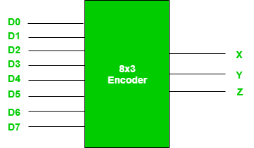
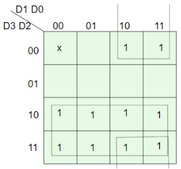
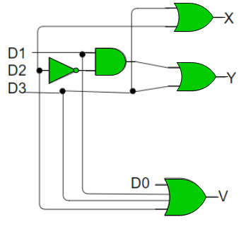

Prerequisite – Encoder, Decoders
Binary code of N digits can be used to store 2N distinct elements of coded information. This is what encoders and decoders are used for. Encoders convert 2N lines of input into a code of N bits and Decoders decode the N bits into 2N lines.
1. Encoders –
An encoder is a combinational circuit that converts binary information in the form of a 2N input lines into N output lines, which represent N bit code for the input. For simple encoders, it is assumed that only one input line is active at a time.
As an example, let’s consider Octal to Binary encoder. As shown in the following figure, an octal-to-binary encoder takes 8 input lines and generates 3 output lines.

Truth Table –
| D7 | D6 | D5 | D4 | D3 | D2 | D1 | D0 | X | Y | Z |
|---|---|---|---|---|---|---|---|---|---|---|
| 0 | 0 | 0 | 0 | 0 | 0 | 0 | 1 | 0 | 0 | 0 |
| 0 | 0 | 0 | 0 | 0 | 0 | 1 | 0 | 0 | 0 | 1 |
| 0 | 0 | 0 | 0 | 0 | 1 | 0 | 0 | 0 | 1 | 0 |
| 0 | 0 | 0 | 0 | 1 | 0 | 0 | 0 | 0 | 1 | 1 |
| 0 | 0 | 0 | 1 | 0 | 0 | 0 | 0 | 1 | 0 | 0 |
| 0 | 0 | 1 | 0 | 0 | 0 | 0 | 0 | 1 | 0 | 1 |
| 0 | 1 | 0 | 0 | 0 | 0 | 0 | 0 | 1 | 1 | 0 |
| 1 | 0 | 0 | 0 | 0 | 0 | 0 | 0 | 1 | 1 | 1 |
As seen from the truth table, the output is 000 when D0 is active; 001 when D1 is active; 010 when D2 is active and so on.
Implementation –
From the truth table, the output line Z is active when the input octal digit is 1, 3, 5 or 7. Similarly, Y is 1 when input octal digit is 2, 3, 6 or 7 and X is 1 for input octal digits 4, 5, 6 or 7. Hence, the Boolean functions would be:
X = D4 + D5 + D6 + D7 Y = D2 +D3 + D6 + D7 Z = D1 + D3 + D5 + D7
Hence, the encoder can be realised with OR gates as follows:

One limitation of this encoder is that only one input can be active at any given time. If more than one inputs are active, then the output is undefined. For example, if D6 and D3 are both active, then, our output would be 111 which is the output for D7. To overcome this, we use Priority Encoders.
Another ambiguity arises when all inputs are 0. In this case, encoder outputs 000 which actually is the output for D0 active. In order to avoid this, an extra bit can be added to the output, called the valid bit which is 0 when all inputs are 0 and 1 otherwise.
Priority Encoder –
A priority encoder is an encoder circuit in which inputs are given priorities. When more than one inputs are active at the same time, the input with higher priority takes precedence and the output corresponding to that is generated.
Let us consider the 4 to 2 priority encoder as an example.
From the truth table, we see that when all inputs are 0, our V bit or the valid bit is zero and outputs are not used. The x’s in the table show the don’t care condition, i.e, it may either be 0 or 1. Here, D3 has highest priority, therefore, whatever be the other inputs, when D3 is high, output has to be 11. And D0 has the lowest priority, therefore the output would be 00 only when D0 is high and the other input lines are low. Similarly, D2 has higher priority over D1 and D0 but lower than D3 therefore the output would be 010 only when D2 is high and D3 are low (D0 & D1 are don’t care).
Truth Table –
| D3 | D2 | D1 | D0 | X | Y | V |
|---|---|---|---|---|---|---|
| 0 | 0 | 0 | 0 | x | x | 0 |
| 0 | 0 | 0 | 1 | 0 | 0 | 1 |
| 0 | 0 | 1 | x | 0 | 1 | 1 |
| 0 | 1 | x | x | 1 | 0 | 1 |
| 1 | x | x | x | 1 | 1 | 1 |
Implementation –
It can clearly be seen that the condition for valid bit to be 1 is that at least any one of the inputs should be high. Hence,
V = D0 + D1 + D2 + D3
For X:

=> X = D2 + D3
For Y:

=> Y = D1 D2’ + D3
Hence, the priority 4-to-2 encoder can be realized as follows:

2. Decoders –
A decoder does the opposite job of an encoder. It is a combinational circuit that converts n lines of input into 2n lines of output.
Let’s take an example of 3-to-8 line decoder.
Truth Table –
| X | Y | Z | D0 | D1 | D2 | D3 | D4 | D5 | D6 | D7 |
|---|---|---|---|---|---|---|---|---|---|---|
| 0 | 0 | 0 | 1 | 0 | 0 | 0 | 0 | 0 | 0 | 0 |
| 0 | 0 | 1 | 0 | 1 | 0 | 0 | 0 | 0 | 0 | 0 |
| 0 | 1 | 0 | 0 | 0 | 1 | 0 | 0 | 0 | 0 | 0 |
| 0 | 1 | 1 | 0 | 0 | 0 | 1 | 0 | 0 | 0 | 0 |
| 1 | 0 | 0 | 0 | 0 | 0 | 0 | 1 | 0 | 0 | 0 |
| 1 | 0 | 1 | 0 | 0 | 0 | 0 | 0 | 1 | 0 | 0 |
| 1 | 1 | 0 | 0 | 0 | 0 | 0 | 0 | 0 | 1 | 0 |
| 1 | 1 | 1 | 0 | 0 | 0 | 0 | 0 | 0 | 0 | 1 |
Implementation –
D0 is high when X = 0, Y = 0 and Z = 0. Hence,
D0 = X’ Y’ Z’
Similary,
D1 = X’ Y’ Z D2 = X’ Y Z’ D3 = X’ Y Z D4 = X Y’ Z’ D5 = X Y’ Z D6 = X Y Z’ D7 = X Y Z
Hence,